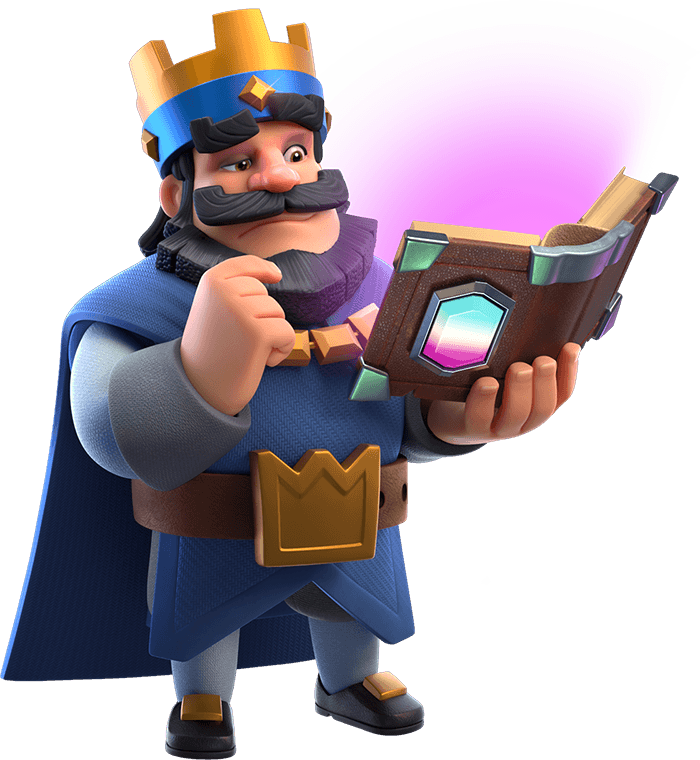

Clash Royale: A Batalha Real de Cartas!
Mas o que é jogo: Clash Royale é um jogo mobile de estratégia em tempo real que coloca você no comando de um exército de cartas. Você precisa usar sua inteligência e estratégia para derrotar seus oponentes em batalhas épicas de 3 minutos.
O que torna Clash Royale tão viciante?
- Combinação de estratégia e ação: Você precisa pensar rápido e tomar decisões estratégicas, mas também precisa ser ágil para reagir aos ataques do seu oponente.
- Coleção de cartas: Existem centenas de cartas diferentes para coletar, cada uma com suas próprias habilidades e pontos fortes. Você precisa construir um deck de cartas que funcione bem para o seu estilo de jogo.
- Competição global: Você pode lutar contra jogadores de todo o mundo em diferentes arenas e torneios.
- Atualizações constantes: A Supercell, desenvolvedora do jogo, está sempre adicionando novas cartas, modos de jogo e eventos para manter o jogo fresco e emocionante.
Algumas dicas para iniciantes:
- Comece com um deck básico: Existem muitos decks básicos disponíveis online, use-os como ponto de partida para construir seu próprio deck.
- Concentre-se em melhorar suas cartas:Use suas moedas e gemas para melhorar suas cartas e aumentar seus níveis.
- Experimente diferentes estratégias:Não tenha medo de experimentar diferentes decks e estratégias para encontrar o que funciona melhor para você.
- Jogue com amigos:Jogue com amigos para compartilhar dicas e estratégias.
Clash Royale é um jogo que oferece horas de diversão e desafio. Se você gosta de jogos de estratégia e ação, este é o jogo perfeito para você!
